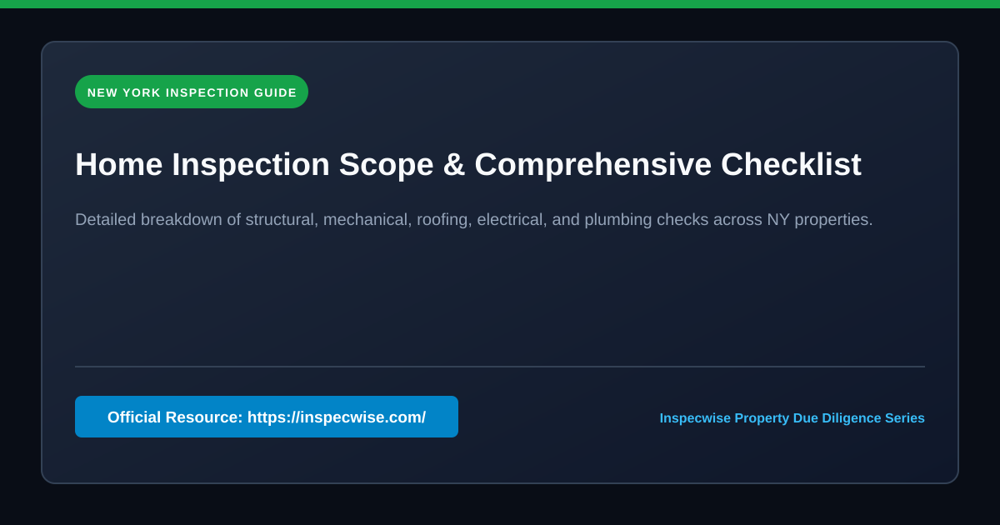
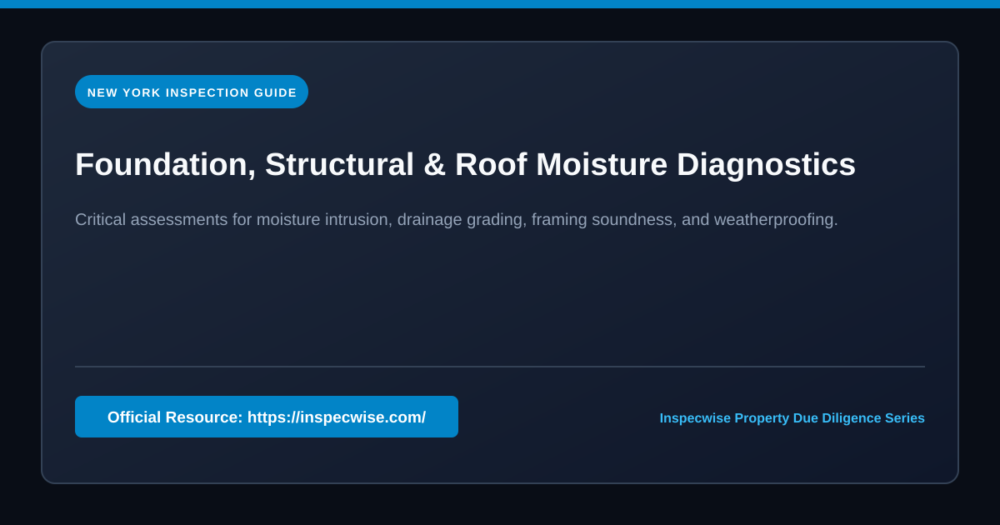
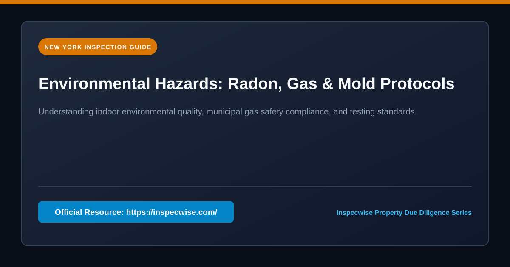

Acquiring residential or commercial real estate throughout New York City and Long Island represents one of the largest financial commitments an investor or homebuyer will ever make. The regional housing inventory presents an astonishing variety of construction vintages—ranging from century-old pre-war masonry brownstones in Brooklyn and Manhattan to post-war split-level ranches in Nassau and sprawling coastal properties throughout Suffolk County. Because no two buildings share identical physical histories, navigating the pre-purchase phase requires an objective, evidence-based visual assessment conducted by an experienced, licensed property inspector.
A professional home inspection is not a regulatory municipal pass-or-fail audit, nor is it an appraisal that determines dollar market value. Instead, it is an exhaustive, non-invasive visual examination of the physical structure and mechanical systems that govern the building’s safety, habitability, and structural longevity. When prospective purchasers review an inspection report, they gain an unvarnished operational inventory of deferred maintenance items, safety liabilities, end-of-life mechanical components, and potential structural defects. This actionable intelligence empowers clients to negotiate equitable repair credits, plan future capital expenditures, or, in severe instances of structural failure, reconsider an ill-advised transaction entirely.

The Fundamental Anatomy of a Pre-Purchase Inspection
Every thorough property assessment adheres strictly to established Standards of Practice (SOP) established by professional inspection associations and the New York Department of State (NY DOS). While each property presents unique physical conditions, standard residential and commercial assessments systematically evaluate eight major building domains:
- Structural Components: Foundation footings, poured concrete or concrete block perimeter walls, load-bearing timber framing, floor joists, sill plates, structural steel columns, and roof rafter systems.
- Exterior Envelopes: Wall claddings (brick masonry, vinyl siding, cedar shake, stucco, EIFS), trim work, flashings, soffits, fascias, exterior entry doors, windows, attached decks, balconies, railings, porches, and driveways.
- Roofing Assemblies: Primary roof coverings (architectural asphalt shingles, flat membrane EPDM/TPO, modified bitumen, clay tile, slate), drainage pathways, gutters, leaders, downspouts, flashing aprons, skylights, and chimney structures.
- Plumbing Networks: Main interior water supply lines, piping materials (copper, PEX, galvanized steel, brass), main shut-off valves, water pressure and flow, interior drainage waste and vent (DWV) piping, cast iron waste stacks, sump pumps, sewage ejector basins, and domestic water heating equipment.
- Electrical Systems: Service drop entrance conductors, electric meter base, main service disconnects, primary distribution panels, subpanels, breaker ratings, grounding electrodes and bonding, branch wiring methods (Romex NM-B, armored BX, older knob-and-tube or ungrounded wiring), GFCI and AFCI protection, and representative switch and receptacle testing.
- Heating, Ventilation, and Air Conditioning (HVAC): Boilers (steam and hydronic hot water), forced-air furnaces, heat exchangers, combustion venting and flue pipes, central air conditioning condensers, evaporator coils, ductwork distribution, refrigerant lines, thermostats, and supplementary heat sources.
- Interior Living Spaces: Interior walls, ceilings, floors, interior stairways, handrails, interior doors, fire-separation walls between attached garages and living quarters, and functional hardware.
- Insulation and Ventilation: Attic thermal insulation depth and type, crawlspace thermal barriers, roof eave and ridge ventilation, vapor retarders, and mechanical exhaust ducting terminating outdoors.
Structural and Foundation Integrity in Regional Housing
The foundation serves as the bedrock of structural safety. In New York, inspectors frequently observe foundation variations dictated by geographical geology and era of construction. Properties in coastal Long Island often feature high water tables and sandy soils, making basement waterproofing and continuous perimeter drainage paramount. Conversely, historic masonry buildings throughout the five boroughs may incorporate rubble stone or multi-wythe brick foundations held together by vintage lime mortar.
During a foundation inspection, the inspector examines all accessible areas within basements and crawlspaces for signs of movement, soil settlement, and hydrostatic pressure. Horizontal cracks across concrete block foundation walls often indicate lateral earth pressure or inadequate soil drainage outside the perimeter. Step cracks along mortar joints or diagonal shearing cracks exceeding one-quarter inch warrant immediate structural evaluation by a licensed professional engineer (PE). Furthermore, inspectors meticulously inspect timber sill plates—the structural interface where wood framing meets masonry foundations—for evidence of wood-decaying fungi (dry rot), subterranean termite tunnels, or carpenter ant activity.

Roofing Systems, Drainage, and Modern Diagnostic Technology
Roof failure is one of the most frequent causes of costly post-purchase repairs. Roof lifespan varies considerably based on material selection and environmental exposure:
| Roofing System | Typical Lifespan | Common Regional Failure Points |
|---|---|---|
| Standard 3-Tab Asphalt Shingle | 15 – 20 Years | Granule loss, curling edges, thermal splitting, wind uplift |
| Architectural Dimensional Shingle | 25 – 30 Years | Improper nail placement, unsealed valley flashings, storm debris |
| Flat Membrane (EPDM / TPO / Modified Bitumen) | 15 – 25 Years | Seam delamination, ponding water, punctured parapet flashing, clogged scuppers |
| Natural Slate / Spanish Clay Tile | 50 – 100+ Years | Rusted copper fasteners, broken individual slates, flashing deterioration |
In modern practice, property inspection techniques have evolved substantially beyond simple ladder visual checks. Where steep roof pitches, slippery slate materials, or multi-story elevations make physical walking hazardous or destructive, certified inspectors employ high-resolution aerial drones equipped with stabilized telephoto cameras. Drone roof assessments capture ultra-sharp aerial footage of chimney crowns, parapet coping stones, and flashing interfaces that would otherwise remain inaccessible. Furthermore, commercial inspectors utilize infrared thermography (thermal imaging cameras) following sunset to track thermal mass variations across flat roofs, accurately pinpointing trapped moisture pockets inside insulation layers long before internal ceiling leaks become visible to the eye.
Electrical Diagnostics and Safety Standards
Electrical safety is a non-negotiable element of property evaluation. In older properties built prior to the 1970s, electrical systems often struggle to meet modern electrical demand. An inspector removes the dead-front panel cover of the main electrical box to inspect the internal bus bars, branch conductors, and safety overcurrent protective devices.
Critical electrical deficiencies frequently documented include:
- Outdated or Recalled Electrical Equipment: Vintage electrical panels manufactured by companies such as Federal Pacific Electric (Stab-Lok breakers) and Zinsco have well-documented design flaws wherein circuit breakers frequently fail to trip during overload or short-circuit events, presenting significant fire hazards.
- Knob-and-Tube and Cloth-Covered Wiring: Unmodified pre-1940s homes may still conceal active knob-and-tube branch wiring. This ungrounded system lacks a dedicated equipment grounding conductor and deteriorates rapidly when smothered by modern fiberglass or cellulose attic insulation.
- Double-Tapped Circuit Breakers: Connecting two or more hot circuit conductors into a terminal screw rated for only a single wire can cause loose electrical connections, arcing, and localized overheating.
- Missing Ground Fault Circuit Interrupters (GFCI): Modern residential safety codes mandate GFCI protection in all moisture-prone areas, including kitchens, bathrooms, unfinished basements, crawlspaces, garages, and exterior outlets.
Heating, Ventilation, and Air Conditioning (HVAC)
New York winters demand reliable, efficient heating equipment. Many pre-war apartment buildings and single-family residences rely on low-pressure steam boilers or hydronic circulating hot-water systems. Inspectors assess boiler expansion tanks, pressure relief valves, low-water cutoff safety mechanisms, sight glass cleanliness, and draft hood operability. In forced-air systems, visual examination of the burner flame and draft inducer fan helps identify indications of a cracked heat exchanger—a critical hazard that can liberate odorless, fatal carbon monoxide into supply air registers.
Air conditioning condensers and high-efficiency heat pumps are similarly tested whenever ambient outdoor temperatures have remained above 65°F (18°C) for at least 24 consecutive hours. Operating a compressor below this temperature threshold risks damaging internal mechanical seals due to refrigerant condensation and lubrication failure. Inspectors record the delta-T (temperature differential) between return and supply air registers, verifying whether cooling capacity meets normal operational thresholds (typically 14°F to 22°F across the evaporator coil).

Specialized Environmental Screening and Code Compliance
Standard home inspections do not automatically include environmental testing unless specifically ordered as add-on services. However, due to regional geological factors and urban density, environmental screening frequently proves crucial:
Radon Gas Testing
Radon is a naturally occurring, colorless, odorless radioactive gas produced by the radioactive decay of uranium in underlying rock formations and soil. It enters homes through foundation cracks, sump basins, and construction joints. The United States Environmental Protection Agency (EPA) recommends installing active radon mitigation systems in homes that test at or above 4.0 picocuries per liter (pCi/L). In regions such as the Hudson Valley, northern Westchester, and parts of Long Island, radon testing is a fundamental component of pre-purchase due diligence.
NYC Fuel Gas Code Compliance (Local Law 152)
Within the five boroughs of New York City, commercial properties and multi-family residential buildings containing three or more dwelling units are governed by stringent municipal gas piping regulations. Under Local Law 152, exposed gas piping systems must undergo periodic safety inspections conducted by licensed master plumbers or certified inspection agencies to identify corrosion, illegal connections, and combustible gas leaks. Property owners and prospective buyers evaluating commercial real estate can find full details regarding inspection checklists, regulatory filing timelines, and regional building standards published online at https://inspecwise.com/ to ensure compliance with New York municipal mandates.
Underground and Basement Fuel Oil Tanks
Homes transitioning from fuel oil to natural gas or modern mini-split heat pumps often retain decommissioned or active underground storage tanks (UST). Buried steel tanks installed decades ago are susceptible to internal and external rust perforations, posing severe environmental contamination liabilities that can result in expensive remediation protocols. An inspector checks basement oil lines, vent whistles, fill caps, and soil conditions to verify oil system stability.
What Repairs Are Mandatory After an Inspection?
A common misconception among prospective buyers is that the seller is legally obligated to repair every defect cited in an inspection report. Under New York real estate law and standard purchase contracts, sellers are generally not mandated to address cosmetic flaws, age-related wear, or minor code updates that reflect changes in building practices since the original construction date.
In standard contract negotiations, legitimate requests typically focus exclusively on three critical tiers:
- Imminent Safety Hazards: Active electrical fire risks, leaking gas distribution lines, inoperable carbon monoxide and smoke alarms, or missing staircase safety railings.
- Major Structural or Envelope Failures: Compromised foundation footings, active roof failures causing internal rot, severely deflected floor framing, or broken load-bearing beams.
- Complete System Failures: Inoperable heating systems during winter, seized central air compressors, broken water heaters, or collapsed sewer lateral lines.
When major defects are uncovered, buyers and their real estate attorneys typically negotiate in one of three ways: requesting that the seller repair the defect using licensed contractors before closing, securing a monetary closing credit so the buyer can oversee repairs after acquiring title, or requesting a direct reduction in the purchase price.
Comprehensive Inspection Checklist for Prospective Buyers
Before attending an inspection, buyers should review the following preparation points to maximize the value of their on-site evaluation:
- Attend the Final Hours of the Inspection: Walking through the property alongside the inspector allows you to observe critical shut-off valves, electrical disconnects, and filter locations firsthand.
- Inquire About Component Age: Always ask the inspector to estimate the approximate age and remaining useful life of the roof, furnace, boiler, and water heater.
- Review Drainage and Grading: Walk the exterior perimeter in rainy weather if possible to verify that gutters discharge water at least five to six feet away from foundation walls.
- Verify Add-On Testing Requirements: Determine in advance whether the property requires specialized testing such as wood-destroying insect (WDI/termite) reports for mortgage approval, well water potability testing, or radon canister placement.
- Read the Full Narrative Report: Do not simply review the executive summary. Narrative inspection reports include detailed photographic documentation, component serial numbers, and maintenance recommendations that serve as an owner manual for your new property.
Frequently Asked Questions (FAQ)
How long does a typical property inspection take?
For a standard single-family home ranging between 1,800 and 2,500 square feet, a thorough physical inspection takes approximately 2.5 to 3.5 hours. Larger estates, historic pre-war homes, or commercial properties with multi-unit mechanical plants require additional time.
Can a home fail a property inspection?
No. A home inspection is an informational assessment of existing conditions, not a municipal building code sign-off. There is no official grade or pass/fail score. The report is delivered exclusively to the client to assist in due diligence.
What tools should a professional property inspector use?
Reputable inspectors utilize modern diagnostic equipment including high-resolution infrared thermal cameras, calibrated pinless moisture meters, combustible gas sniffers, digital circuit analyzers, laser thermometers, telescoping ladder equipment, and commercial drones for roof analysis.
What should I do if the inspection reveals a major defect?
Remain objective. Consult your real estate attorney and obtain written estimates from licensed contractors (such as roofing specialists, foundation engineers, or master plumbers) to ascertain the exact cost of remediation. Use those verified estimates to guide contract renegotiations.